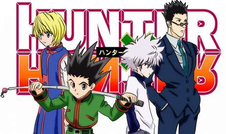
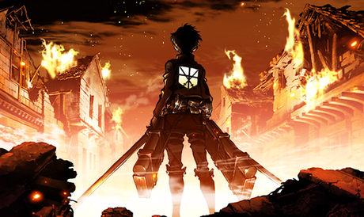
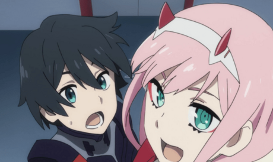
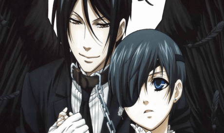
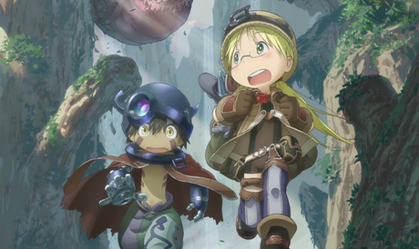
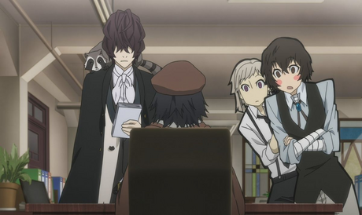

Les Animés

 Ma liste
Ma liste
Hunter x hunter
Shingeki no kyojin
Darling in the franxx
Black butler
Made in abyss
Bungou stray dogs
Le jeune Gon vit sur une petite île avec sa tante. Abandonné par son père qui est un Hunter, à la fois un aventurier et un chasseur de primes, Gon décide à l'âge de 12 ans de partir pour devenir un Hunter. Cela ne sera pas chose aisée, il devra passer une suite de tests et examens en compagnie de milliers d'autres prétendants au titre de Hunter. En savoir plus

Dans un monde ravagé par des titans mangeurs d’homme depuis plus d’un siècle, les rares survivants de l’Humanité n’ont d’autre choix pour survivre que de se barricader dans une cité-forteresse. Le jeune Eren, témoin de la mort de sa mère dévorée par un titan, n’a qu’un rêve : entrer dans le corps d’élite chargé de découvrir l’origine des Titans et les annihiler jusqu’au dernier… En savoir plus

Dans un lointain futur, la Terre est en ruine et l’humanité s’est retranchée dans une ville fortifiée mobile. Un quartier est dédié à la formation de jeunes pilotes qui ne connaissent rien du monde extérieur. Leur seul but dans la vie est d’apprendre à piloter des robots, les Franxx, afin d’affronter un mystérieux ennemi géant mais invisible. En savoir plus

Londres - XIX siècle. Après la mort inexpliquée de ses parents, Ciel Phantomhive, jeune garçon de 12 ans dirige l’entreprise familiale avec une habilité déconcertante. Sa réussite, il l’a doit avant tout à son majordome Sebastian Michaelis. Irréprochable, attentionné et véritable « cordon-bleu », il semble lié à Ciel par un pacte mystérieux. Ce diable de majordome est habile pour satisfaire son maître et beaucoup vont l’apprendre à leurs dépens… En savoir plus

"Abyss", un lieu intriguant et nimbé de mystère. Un trou béant, seul lieu inexploré du monde.
Un endroit fascinant et dangereux. Riko, jeune orpheline, a grandi dans une petite ville située au bord du gouffre tout en rêvant de devenir exploratrice, comme sa mère. Un jour, alors qu'elle explore le premier niveau de l'Abyss, elle rencontre un étrange robot qui ressemble à s'y méprendre à un être humain. En savoir plus

L'Agence des Détectives armés est une organisation spéciale regroupant des enquêteurs tous dotés de capacités surnaturelles. Ils n'interviennent que sur les affaires que la police ne parvient pas à résoudre. Durant leurs investigations, ils se retrouvent souvent confrontés à la Mafia portuaire, qui réunit, elle aussi, des membres extraordinaires. Seulement, les assauts de la mafia deviennent plus insistants depuis l'arrivée à l'Agence, d'Atsushi, un jeune homme ayant le pouvoir de se changer en tigre, dont la tête est mise à prix. En savoir plus
